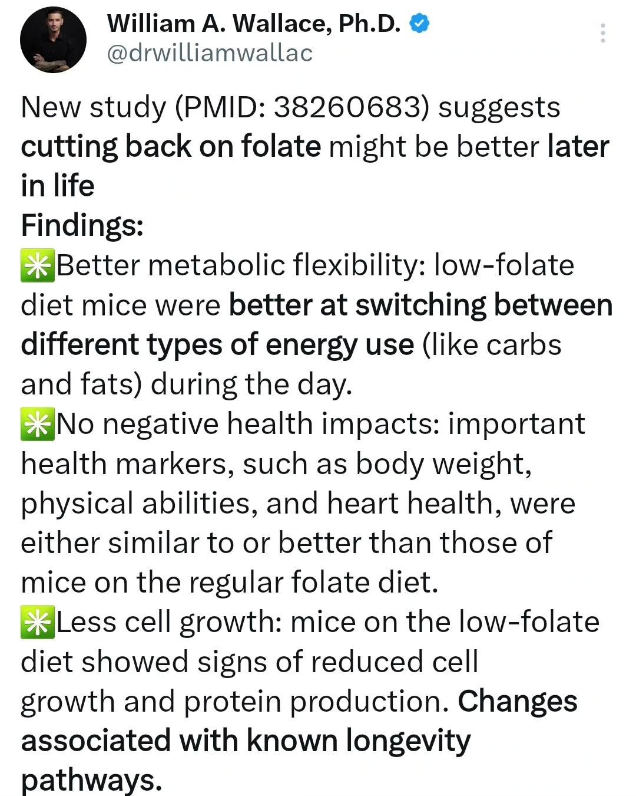

Link to journal paper:
Paper · Nutr J · 2026Vitamin B12 and cardiovascular health: mechanisms, clinical evidence, and future directionslink.springer.com#vitaminb12HD #homocysteineHD #strokeHD #heartattackHD #folateHD #vitaminb6HD #bvitaminsHD
Louis shares a review summary showing B12 supplements reliably lower homocysteine, but large randomized trials did not consistently reduce heart attacks or cardiac deaths. The strongest benefit was for stroke, mainly where foods are not folic-acid fortified, but most trials combined B12 with folic acid and B6. Routine B12 solely for CVD prevention is not supported, though it is essential if deficient.
Link to journal paper:
Paper · Nutr J · 2026Vitamin B12 and cardiovascular health: mechanisms, clinical evidence, and future directionslink.springer.com#vitaminb12HD #homocysteineHD #strokeHD #heartattackHD #folateHD #vitaminb6HD #bvitaminsHD
💊 Vitamin B12 supplements may not protect your heart as much as many people think. But a new review suggests B vitamins could help lower stroke risk.
Vitamin B12 helps make red blood cells and keeps nerves healthy. It also helps break down homocysteine, an amino acid in the blood.
High homocysteine levels have long been linked to heart disease and stroke. So many hoped B12 supplements could protect the heart.
Researchers led by Ameer Awashra at An-Najah National University in Palestine reviewed past studies on B12 and heart health.
They found that B12 supplements reliably lower homocysteine levels.
But in large randomized trials, this did not consistently lead to fewer heart attacks or deaths from heart disease.
"Improving a laboratory measurement does not necessarily translate into better clinical outcomes," said Awashra.
The strongest evidence of a benefit was for stroke prevention. This was clearer in countries where foods are not required to be fortified with folic acid.
But most of these studies combined B12 with other B vitamins, folic acid and B6. So the benefit cannot be credited to B12 alone.
"Current evidence does not support routinely taking additional vitamin B12 solely to prevent cardiovascular disease," Awashra said.
B12 is still essential for people who are deficient, such as some older adults, vegans and people taking certain medicines.
It is still unclear why B vitamins might lower stroke risk but not heart attack risk. The two conditions may develop in partly different ways.
There are caveats. This is a review of existing research, not a new trial. It did not pool data into new statistics.
The studies it reviewed varied in doses, people and design.
If you think you may be low in B12, ask your doctor for a blood test before starting supplements.
📃 RESEARCH PAPER
📌 Ameer Awashra et al., "Vitamin B12 and cardiovascular health: mechanisms, clinical evidence, and future directions," Nutrition Journal (2026).

Louis shares a short Cleveland Clinic explainer that homocysteine is an amino acid broken down by vitamins B12, B6 and folate, and that high levels may indicate deficiency and increase clot, heart disease and stroke risk. It is basic background without trial evidence.
Louis shares a Tufts article on clinical trial evidence for B vitamins in brain and heart health. He highlights that randomized trials show substantial benefit for certain groups, such as older people with high homocysteine at risk of dementia.
Louis reshares his summary of the Oxford VITACOG randomized trial of folate, B6 and B12 in elderly people with MCI. B vitamins slowed brain shrinkage, most in those with high baseline homocysteine, and later analyses suggested benefit depended on high omega-3 status.
Louis highlights a BMC Nutrition 2025 meta-analysis of 45 RCTs (96,962 people): folic acid reduced stroke 15% and CVD 5%, but not mortality, CHD or PAD. He suspects other folates may behave similarly.
Among AHS-2 participants (about 88,000, over 12,000 deaths), vegans aged 85 and older had higher risk of death from stroke (17%), dementia (13%) and Parkinson's (37%) than healthy non-vegetarians, while pesco-vegetarians had the lowest risk. The comparison was against very healthy non-vegetarians, not the standard American diet.

Louis warns that too much folate, especially the methylated form (5-MTHF), shortened lifespan and promoted cancer growth in mice and worms. He recommends about the RDA from food-grade folate or folic acid and suggests safer ways to lower homocysteine.